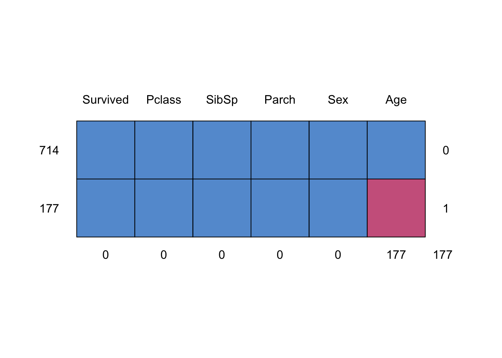

summary(titanic_train$Age) Min. 1st Qu. Median Mean 3rd Qu. Max. NA's
0.42 20.12 28.00 29.70 38.00 80.00 177 February 18, 2023
데이터에 결측치(NA)가 있는 경우, 결측치를 다른 값으로 채워넣어주는데, 이것을 imputation이라고 부릅니다. imputation을 할 때 꼭 확인해야 하는 것이 있는데, 바로 imputation 전후에 변수의 분포(distribution)을 확인하는 것입니다.
해당 변수의 분포를 확인하는 것은 imputation 전후에 변수의 분포를 비교하기 위함입니다. 좋은 imputation은 imputation 이전의 분포와 imputation 이후의 분포가 비슷하게 해주어야 하는데, 이는 imputation을 실시한다 해도 원래 데이터의 분포를 반영하게끔 유지해야 하기 때문입니다.
titanic 패키지의 데이터를 활용해 imputation 연습을 진행해보도록 하겠습니다.
Min. 1st Qu. Median Mean 3rd Qu. Max. NA's
0.42 20.12 28.00 29.70 38.00 80.00 177 titanic_train |> ggplot(aes(x=Age))+
geom_histogram(color='black', fill='dodgerblue') + theme_classic()titanic_train 데이터의 나이(Age)를 살펴보니, NA가 177건이 있고, 결측치를 제외한 나머지 데이터는 위와 같은 분포를 띄고 있습니다. 이제 imputation을 통해 결측치를 채워넣어주도록 하겠습니다.
Imputation에는 크게 두 가지가 존재합니다. 하나는 Single imputation이고 다른 하나는 Multiple imputation입니다.
Single imputation은 특정 패키지를 사용하지 않고, 평균, 중앙값 등 해당 변수의 단순 요약값을 이용하여 결측치를 채워넣는 방법을 의미합니다.
평균, 중앙값 등 여러 가지 단일한 값을 채워 넣어 imputation 전과 후의 Age 변수의 분포를 비교해보도록 하겠습니다.
titanic_age_impute <- data.frame(
original = titanic_train$Age, impute_const = ifelse(is.na(titanic_train$Age),0, titanic_train$Age),
impute_mean = ifelse(is.na(titanic_train$Age), mean(titanic_train$Age,na.rm=T), titanic_train$Age),
impute_median = ifelse(is.na(titanic_train$Age), median(titanic_train$Age,na.rm=T), titanic_train$Age) ) p1 <- titanic_age_impute |> ggplot(aes(x=original)) + geom_histogram(color='black', fill='dodgerblue') + labs(title='Original distribution') + theme_classic()
p2 <- titanic_age_impute |> ggplot(aes(x=impute_const))+ geom_histogram(color='black', fill='darksalmon') + labs(title='Constant-imputed distribution') + theme_classic()
p3 <- titanic_age_impute |> ggplot(aes(x=impute_mean))+ geom_histogram(color='black', fill='darkseagreen') + labs(title='Mean-imputed distribution') + theme_classic()
p4 <- titanic_age_impute |> ggplot(aes(x=impute_median))+ geom_histogram(color='black', fill='goldenrod') + labs(title='Median-imputed distribution') + theme_classic()Single imputation 이후, 데이터의 분포를 Original과 비교했을 때, 분포가 굉장히 달라져있는 것을 볼 수 있습니다. Single imputation 특성 상, 하나의 값으로 모든 NA를 채워넣기 때문에 기존 데이터의 분포가 왜곡되게 됩니다.
multiple imputation은 single imputation과 달리, 결측치를 여러가지 변수로 채워넣는 방법입니다. NA가 있는 변수 이외의 다른 변수들까지 함께 고려하여, 채워넣을 변수를 지정하는 방법입니다.
multiple imputation을 도와주는 대표적인 패키지는 mice 입니다.
mice 패키지는 데이터의 어떤 변수에 NA가 있는지 확인할 수 있습니다.

Survived Pclass SibSp Parch Sex Age
714 1 1 1 1 1 1 0
177 1 1 1 1 1 0 1
0 0 0 0 0 177 177위의 그림으로 봤을 때, Age에 NA가 있는 것을 알 수 있습니다.
하지만 mice 패키지의 가장 큰 활용분야는 NA를 채워넣는 것입니다. mice() 를 이용해 결측치를 채워넣습니다. 이 때 method 인자에 원하는 imputation 방법을 설정할 수 있습니다.
대표적인 method는 pmm, cart, lasso.norm 등이 있습니다.
pmm: Predictive mean matchingcart: classification and regression trees 이용lasso.norm: Lasso linear regression 이용그 외에도 다양한 imputation 방법이 있으니, 자세한 사항은 ?mice()를 참고하시기 바랍니다.
mice()로 결측치를 채워넣은 뒤, complete()를 이용해 결측치가 채워진 데이터를 생성합니다.
m_pmm <- mice(titanic_train, method='pmm', printFlag = F)
m_cart <- mice(titanic_train, method='cart', printFlag = F)
m_lasso <- mice(titanic_train, method = 'lasso.norm', printFlag = F)
titanic_age_impute <- data.frame(
original = titanic_train$Age,
impute_pmm = complete(m_pmm)$Age,
impute_cart = complete(m_cart)$Age,
impute_lasso = complete(m_lasso)$Age)
p1 <- titanic_age_impute |> ggplot(aes(x=original)) + geom_histogram(color='black', fill='dodgerblue') + labs(title='Original distribution') + theme_classic()
p2 <- titanic_age_impute |> ggplot(aes(x=impute_pmm))+ geom_histogram(color='black', fill='darksalmon') + labs(title='PMM imputed distribution') + theme_classic()
p3 <- titanic_age_impute |> ggplot(aes(x=impute_cart))+ geom_histogram(color='black', fill='darkseagreen') + labs(title='CART imputed distribution') + theme_classic()
p4 <- titanic_age_impute |> ggplot(aes(x=impute_lasso))+ geom_histogram(color='black', fill='goldenrod') + labs(title='Lasso imputed distribution') + theme_classic()
(p1+p2)/(p3+p4)imputation을 살펴봤을 때, CART 를 이용한 imputation이 원래의 Age 분포와 가장 비슷한 것으로 나타났습니다.
mice의 다양한 imputation method는 채워넣고자 하는 변수의 유형 (continuous or categorical)에따라 다양한 방법이 존재합니다. 적절한 imputation 방법들을 통해 결측치를 채워넣어보시기 바랍니다.